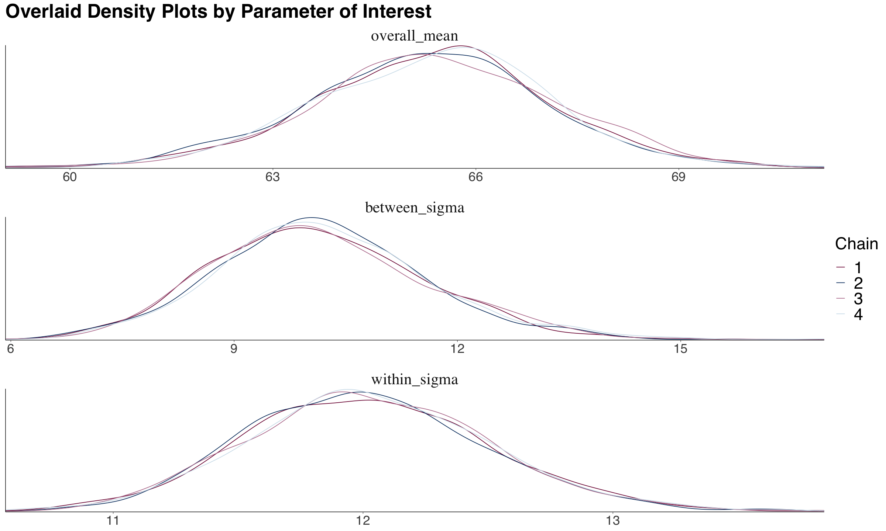
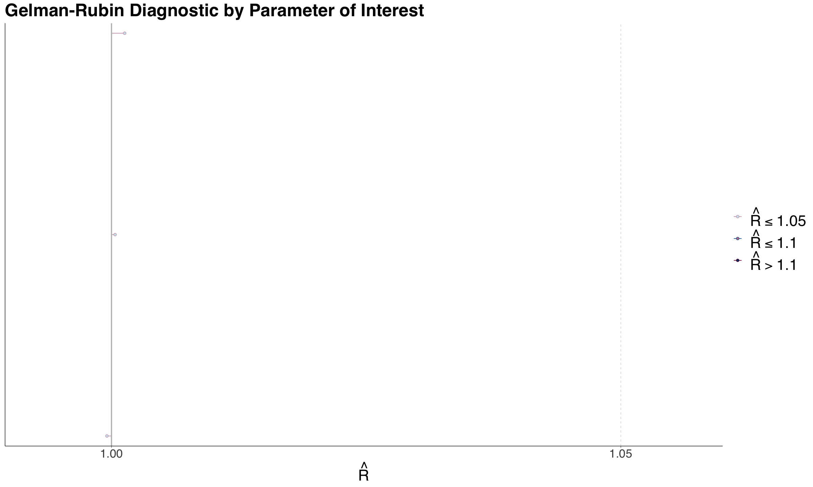

Quiz 2 - 553

Bayes’ Theorem
Let \(\theta\) be a parameter of interest and \(Y\) be the observed data.
- Prior: \(P(\theta)\)
- \(P(\theta^c) = 1 - P(\theta)\)
- Likelihood of the data given the parameter:
- \(\ell(\theta|Y) = P(Y|\theta)\)
- Posterior (what we want to find): \(P(\theta|Y)\)
\[P(\theta|Y) = \frac{P(Y|\theta)P(\theta)}{P(Y)}\]
\[\text{posterior} = \frac{\text{prior} \times \text{likelihood}}{\text{normalization constant}}\]
\[\text{posterior} \propto \text{prior} \times \text{likelihood}\]
Sampling MCMC using rstan
- Some considerations:
- Warm-up: Discard the first \(n\) samples to allow the chain to converge
- Thinning: Only keep every \(n\)th sample to reduce autocorrelation
- skip the first \(n\) samples and then keep every \(n\)th sample
\[\text{Num of approx posterior samples} = \frac{\text{iter} - \text{warmup}}{\text{thin}}\]
Bayesian Normal Linear Regression
- Comparable to OLS
- Example: We want to consider the effects of
temp_feel(numeric) andweekend(boolean) onrides(count).- For OLS would use Poisson regression since output is count data.
lm(rides ~ temp_feel + weekend, data = bikeshare)
\[Y_i \sim \mathcal{N}(\beta_0 + \beta_1X_{i1} + \beta_2X_{i2}, \sigma^2)\]
- \(X_{i1}\) is
temp_feel - \(X_{i2}\) is
weekend: 1 if weekend, 0 if not - \(\beta_0\) is the intercept ~ \(Gamma(7.5, 1)\)
- \(\beta_1\) is the coefficient for
temp_feel~ \(\mathcal{N}(0, 1000^2)\) - \(\beta_2\) is the coefficient for
weekend~ \(\mathcal{N}(0, 1000^2)\) - \(\sigma^2\) is the variance ~ \(IG(0.001, 0.001)\)
- Inverse Gamma distribution (popular for variance priors > 0)
MCMC Simulation
- Use
stanto sample from the posterior distribution.
{r bikerides_stan}
data {
int<lower=0> n; // training sample size
vector[n] y; // response vector
vector[n] x_1; // regressor 1 vector
vector[n] x_2; // regressor 2 vector
real pred_x_1; // fixed value for regressor 1
real pred_x_2; // fixed value for regressor 2
}
parameters {
real<lower=0> beta_0; // intercept with lower bound
real beta_1; // regression coefficient 1
real beta_2; // regression coefficient 2
real<lower=0> sigma; // common standard deviation with lower bound
}
model {
beta_0 ~ gamma(7.5, 1); // alpha = 7.5 and beta = 1
beta_1 ~ normal(0, 1000); // mu_b1 = 0 and sigma_b1 = 1000
beta_2 ~ normal(0, 1000); // mu_b2 = 0 and sigma_b2 = 1000
sigma ~ inv_gamma(0.001, 0.001); // eta = 0.001 and lambda = 0.001
y ~ normal(beta_0 + beta_1 * x_1 + beta_2 * x_2, sigma);
}
generated quantities {
real y_pred = normal_rng(beta_0 + beta_1 * pred_x_1 + beta_2 * pred_x_2, sigma);
}generated quantitiescreates a posterior predictive distributiony_predwhich takes into account:- Posterior variablility in the parameters (from joint posterior distribution of the parameters)
- Sampling variability in the data (Each prediction should deviate from its posterior prediction) so add random noise
- It executes after obtaining the posterior samples for the parameters.
Now compile the Stan model:
# view the posterior summary
round(summary(posterior_bikeshare)$summary, 2)[-6, c("mean", "sd", "2.5%", "97.5%")]- The 2.5% and 97.5% quantiles are the 95% credible intervals.
- If the interval contains 0, then the coefficient is not significant.
- If the interval is large, then the model is not very certain about the coefficient (i.e. model is not capturing the right systematic component).
- There is also 2.5% and 97.5% quantiles for the
y_predwhich is the posterior predictive distribution for a 95% prediction interval.
Bayesian Hypothesis Testing
- Using a Tinder example where we want to infer the prob of finding a partner if we use Tinder.
- \(X_i \sim \text{Bernoulli}(\pi)\) for each person \(i\)
- \(\pi\) is the probability of finding a partner
- Prior: \(\pi \sim \text{Beta}(a, b)\)
- Likelihood: \(Y|\pi \sim \text{Binomial}(n, \pi)\)
- Posterior: \(\pi|y \sim \text{Beta}(a', b') = \text{Beta}(a+y, b+n-y)\)
- \(X_i \sim \text{Bernoulli}(\pi)\) for each person \(i\)
One-Sided Hypothesis Testing
- Claim: In any city like Vancouver, more than 15% of the single people who use the Tinder app will eventually find a partner.
- Null Hypothesis: \(\pi \leq 0.15\)
- Alternative Hypothesis: \(\pi > 0.15\) (associated with the claim)
- In Bayesian, we use the posterior and get probability for each hypothesis (unlike frequentist).
- Use
pbetafunction to get the probability- If posterior \(Beta(a'=24, b'=192)\) from likelihood of 20 successes out of 200 trials
- Then \(H_0: P(\pi \leq 0.15 | y=20) = \int_0^{0.15} f(\pi | y=20) d\pi\)
- equal to
pbeta(0.15, 24, 192)
- In the Tinder example, we get 2 probabilities:
- \(P(H_0 | y=20) = P(\pi \leq 0.15 | y=20) = 0.957\)
- \(P(H_a | y=20) = P(\pi > 0.15 | y=20) = 0.043\)
- Can get Posterior Odds that \(\pi > 0.15\) by dividing the two probabilities.
\[\text{Posterior Odds} = \frac{P(H_a | y=20)}{P(H_0 | y=20)} = \frac{0.043}{0.957} = 0.045\]
- Interpretation: For \(y=20\), \(\pi\) is 22 times(\(\frac{1}{0.045}\)) more likely to be less than or equal to 0.15 compared to being greater than 0.15 using our posterior model.
Bayes Factor
- Do the same for prior odds
\[\text{Prior Odds} = \frac{P(H_a)}{P(H_0)}\]
\[\text{Bayes Factor} = \frac{\text{Posterior Odds}}{\text{Prior Odds}}\]
- Bayes Factor = 1: Plausibility of \(H_a\) stays the same even after new data
- Bayes Factor > 1: Plausibility of \(H_a\) increases after new data
- Bayes Factor <br 1: Plausibility of \(H_a\) decreases after new data
- If from MCMC, we cannot get analytical solution for Bayes Factor since no exact PDF to integrate.
- Can use
bayesfactorpackage in R to get Bayes Factor.- Solution: Empirical cumulative distribution function (ECDF) of the posterior samples to approximate the posterior distribution. Use
ecdffunction in R.
- Solution: Empirical cumulative distribution function (ECDF) of the posterior samples to approximate the posterior distribution. Use
Two-Sided Hypothesis Testing
- Lets say we want to figure out: whether or not 15% of the single people who use the Tinder app will eventually find a partner (in any city like Vancouver)
- \(H_0: \pi = 0.15\)
- \(H_a: \pi \neq 0.15\)
\[P(\pi = 0.15 | y=20) = \int_{0.15}^{0.15} f(\pi | y=20) d\pi = 0\]
Does not work since =0, so add a range of values (e.g. \(\pm 0.10\))
- \(H_0: \pi \in [0.05, 0.25]\)
- \(H_a: \pi \notin [0.05, 0.25]\)
Then find the credible interval for the posterior distribution of \(\pi\).
qbeta(c(0.025, 0.975), 24, 192)Then based on the results:
- If credible interval falls within the range of \(H_0\), then we are in favor of \(H_0\), with 95% probability.
Bayesian Binary Logistic Regression
- Comparable to logistic regression
The Likelihood
Let \(Y_i \in \{0, 1\}\)
Likelihood: \[Y_i | \beta_0 \beta_1 \sim \text{Bernoulli}(\pi_i) \]
\[\text{link function}: log(\frac{\pi_i}{1-\pi_i}) = \beta_0 + \beta_1 X_i\]
Parameter of interest: \(\beta_0, \beta_1\)
Let us assume Priors:
- \(\beta_0 \sim N(\mu=0, \sigma^2=100^2)\)
- \(\beta_1 \sim N(\mu=0, \sigma^2=100^2)\)
Assume 0 because we do not know if there is any association, also variace is high to reflect the uncertainty.
Comparing Bayesian vs Frequentist BLR
| Frequentist BLR | Bayesian BLR |
|---|---|
| Estimates the MLE (Maximum Likelihood Estimation) | Estimates the posterior distribution |
Estimates the standard errors with std.error in glm() |
Estimates the standard deviation of the posterior distribution wioth sd |
| Estimates the confidence intervals | Estimates the credible intervals |
- A big advantage of Bayesian: did not need to derive any Maximum Likelihood steps
- Meaning of Bayesian coefficients:
- e.g. estimate of \(\beta_1\) is 0.009, 95% credible interval is (0.005, 0.0134), since 0 is not in the posterior credible interval:
- For each unit increase in income, a subject is 1.009 times more likely to believe in climate change
- There is a 95% posterior probability that the true value of \(\beta_1\) lies between 0.005 and 0.0134
Complete Pooled Model
Complete Pooled Model: A model that pools all the data together and estimates a single parameter for all the data
e.g. have a dataset of multiple rocket types and their launchs, and want to estimate the probability of a rocket launch succeeding
- Only 1 \(\pi\) for all the rocket types
\[ \text{likelihood:} \qquad X_i|\pi \sim \text{Binomial}(n_i, \pi) \quad \text{for } i = 1, \dots, 367\\ \text{prior:} \qquad \pi \sim \text{Beta}(a = 1, b = 1). \]
- Does not allow us to infer any probability of an individual group
Non-pooled Model
- Non-pooled Model: A model that estimates a parameter for each group of data
- e.g. have a dataset of multiple rocket types and their launchs, and want to estimate the probability of a rocket launch succeeding
- Have a \(\pi_i\) for each rocket type
\[ \text{likelihood:} \qquad X_i|\pi_i \sim \text{Binomial}(n_i, \pi_i) \quad \text{for } i = 1, \dots, 367\\ \text{prior:} \qquad \pi_i \sim \text{Beta}(a = 1, b = 1). \]
- Better when comparing groups with different sample sizes
- Using MLE will not be reliable when sample sizes are small
- e.g. Binomial distribution with \(n=1\)
- Drawbacks:
- Cannot generalize to new groups
- Cannot take valuable information from other groups
Hierarchical Bayesian Model
- Hierarchical Bayesian Model: A model that estimates a parameter for each group of data, but also estimates a distribution of parameters for all the groups
- Key feature: Nesting of parameters over multiple levels
- Common to have a variable in the model prior is itself a random variable (needs another prior)
- Or a variable in the likelihood is itself a random variable (needs another prior)
- Common to have a variable in the model prior is itself a random variable (needs another prior)
- e.g. have a dataset of multiple rocket types and their launchs, and want to estimate the probability of a rocket launch succeeding
- Have a \(\pi_i\) for each rocket type
- Also have random variables \(\pi_i \sim \text{Beta}(a, b)\)
- \(a\) and \(b\) are parameters and no longer hyperparameters
- new hyperparameters are the priors for \(a\) and \(b\)
\[ \text{likelihood:} \qquad X_i|\pi_i \sim \text{Binomial}(n_i, \pi_i) \quad \text{for } i = 1, \dots, 367\\ \text{priors:} \qquad \pi_i \sim \text{Beta}(a, b) \\ \quad a \sim \text{Gamma}(0.001, 0.001) \\ \qquad b \sim \text{Gamma}(0.001, 0.001). \]
e.g2 dataset of number of freethrows made and attempts by a Basketball player for multiple seasons
- Good because can predict free throw percentage for a new season
- Have a \(n_i\) as number of attempts that season and \(\pi_i\) is free throw percentage for that season
\[ \text{likelihood:} \qquad X_i|\pi_i \sim \text{Binomial}(n_i, \pi_i) \quad \text{where i=season number}\\ \text{prior:} \qquad \pi_i \sim \text{Beta}(a,b) \\ \quad a \sim \text{Gamma}(0.001, 0.001) \\ \qquad b \sim \text{Gamma}(0.001, 0.001). \]
Basically combines the best of of the complete pooled model and the non-pooled model:
- Use valuable info from all groups to infer the success probability of a specific group
- Can get posterior predictive distribution for new group
Why will the estimates be more precise?
- Using Heirarchical Bayesian, we will get narrower Credible Intervals compared to the non-pooled model
- Borrowing Strength: The estimates will be more precise because we are using information from all the groups
- In the case of rockets, its the \(a\) and \(b\) that are being shared
- In the case of basketball, its the \(a\) and \(b\) that are being shared (Same person more likely to have similar free throw percentage in different seasons)
- Helps learn parameters and reduce posterior variance
Get Success for all Groups
- Use posterior means of \(a\) and \(b\) to get the posterior means of \(\pi_i\) for all groups (in rocket example)
Prediction for New Group
- In Stan, need to add a new block
generated quantitiesto get the posterior predictive distribution for a new group
generated quantities {
real<lower=0,upper=1> pi_pred = beta_rng(a, b);
}- This generates a new \(\pi\) for a new group from the posterior distribution of \(a\) and \(b\)
- Mean of
pi_pred(new group) is similar to the posterior mean of \(\pi\) for all groups- because it is the best bayesian model we can obtain without further covariates/ features
- This
generated quantitiesblock will execute after obtaining the posterior samples for the parameters - It will use them to obtain our n posterior predictions using a RNG function to add random noise (sampling variability)
MCMC Diagnostics
- Common pitfalls of MCMC:
- Not enough iterations
- Not enough thinning
- To make it semi-independent
- Not enough burn-in
- Diagnostic to check if MCMC work and is giving “good” samples for the approx posterior dist
Trace Plots
- Illustrate posterior sampling by a chain.
- All chains are overlaid on top of each other (without warm-up)
- Ideal:
- No trend
- No chain stuck in a local mode
library(bayesplot)
traceplot <- mcmc_trace(mcmc_object,
pars = c("param1", "param2"),
size = 0.1,
facet_args = list(nrow = 3))Good example of no trend and no chain stuck in a local mode
Emperical Density Plots
- Overlays the density plot of the parameter of interest with the MCMC posterior samples.
library(bayesplot)
densityplot <- mcmc_dens_overlay(mcmc_object,
pars = c("param1", "param2"),
facet_args = list(nrow = 3))
Effective Sample Size (ESS)
\(N_{eff}\): Number of independent samples needed to give an accurate MCMC posterior approximation.
Let \(N\) be the length of the chain, then we expect:
- \(N_{eff} \leq N\) is normal and expected
- \(N_{eff} \approx N\) is ideal
Compare with ratio of \(N_{eff}/N\):
- If \(N_{eff}/N > 1\), Means need more samples to be as good as Monte Carlo simulation
- Can increase iter OR increase thinning
- If \(N_{eff}/N < 1\), Means need less samples to be as good as Monte Carlo simulation
- Can decrease iter OR decrease thinning
- If \(N_{eff}/N > 1\), Means need more samples to be as good as Monte Carlo simulation
library(bayesplot)
eff_sample_size <- neff_ratio(mcmc_object,
pars = c("param1", "param2"))
essplot <- mcmc_neff(eff_sample_size, size = 2)
Autocorrelation Plots
- MCMC is not entirely independent, so we need to check the autocorrelation of the chain
- Want to see the autocorrelation drop to 0 quickly => shows semi-independence
- Ideally before lag 5
library(bayesplot)
acf <- mcmc_acf(mcmc_object,
pars = c("param1", "param2"))
Gelman-Rubin Diagnostic
- Evaluate within-chain and between-chain variance to check if they are roughly the same
- Convergence problem if \(\hat{R} \neq 1\)
- warning: Sometimes does not make sense for discrete variables
\[ \hat{R} = \sqrt{ 1 + \frac{b^2}{s^2} } \approx 1 \]
- \(b^2\): Between-chain variance
- \(s^2\): Within-chain variance
library(bayesplot)
gelman_rubin <- mcmc_rhat(mcmc_object, size = 2)